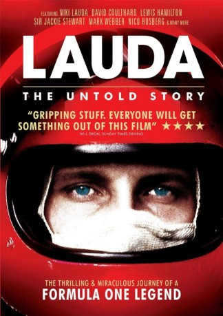

IMDB-Wertung: 6.6 / 10
IMDB-Wertung: 6.6 / 10  Metascore:
Metascore: 
 IMDB-Wertung: 6.6 / 10 Metascore:
Jahr: 2014
Dauer: 90 Minuten
FSK:
Land: Österreich Studio: UFATonspuren: DTS - ,
Untertitel: Deutsch,
Auflösung: 1080p (1920x1080) Größe: 7966 MB
Genre: Dokumentation
Regisseur: Hannes Michael Schalle
Drehbuch: Kenta Fukasaku
Soundtrack:
Darsteller:
 Lewis Hamilton als Himself
Lewis Hamilton als Himself Jackie Stewart als Himself
Jackie Stewart als HimselfDatei: X:\Dokumentationen\Biografie\Lauda The Untold Story (2014, FSK, 1920x1080).mkv seit 07.06.2016
Festplatte: HD Serien(SU-Z)+Dokus+Musik
 Es gibt insgesamt 21 Filme in der Gruppe 'Dokumentationen\Biografie'
Es gibt insgesamt 21 Filme in der Gruppe 'Dokumentationen\Biografie'